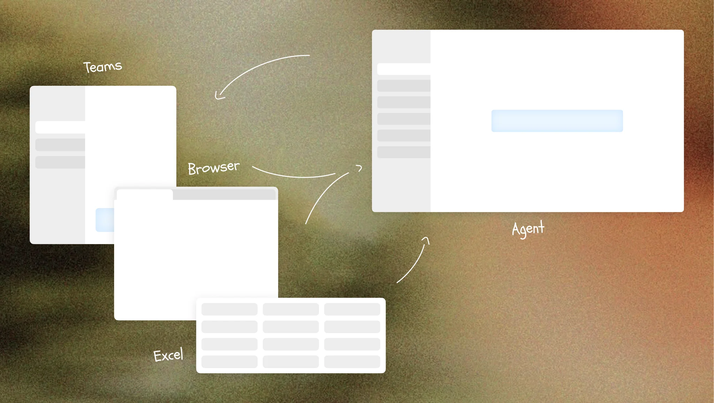

补充背景调研，关键问题、设计策略
拖动照片可移动位置，悬停或点击可播放动画。键盘方向键移动，Escape 复位。
A WORD YOU CAME ACROSS
serendipity
/ˌserənˈdɪpəti/ noun
不期而遇的美好；意外发现的幸运
回到遇见它的地方
“Some of the best discoveries
begin with serendipity.”
原句与语境，一起留下。
Language Bubble · macOS + iOS 原生项目Translation → Context → Learning
1. 产品思维
语言学习，卡在哪里？
头脑风暴 · 待验证🧑🏻💻语言学习者
- 单词背了又忘
- 找不到感兴趣、
难度又合适的材料 - 每天读很多，
真正留下的很少 - 筛选、整理材料
太花时间 - 学习时间零碎，
总被打断 - 收藏一堆资料，
却没再打开 - 看得懂，
开口却用不出来 - 看不到进步，很难坚持
1. 为什么值得 Agent 化
谁是最值得优先服务的用户？
最优先服务的是已有一定语言基础、且日常会持续接触目标语言的人，比如和外籍同事协作的人、需要读文献的学生、以及会主动看原生内容的学习者。因为他们每天都在查词和记词，这个需求高频、真实、持续。
- 已有一定语言基础的人
- 日常会持续接触目标语言语料的人
- 典型用户：外企协作者、需要读文献的学生、会主动看原生内容的学习者
- 原因：他们每天都在查词和记词，需求高频、真实、持续
哪个具体场景最有价值？
- 查单词：最高频、最明确、传统词典形态长期没变
- 记单词：核心痛点是记忆和真实使用场景分离，容易机械背词
- 优先级上先做查单词，因为它是最自然的入口，可顺势衔接理解、记忆和复习
和几个语言学习者进行讨论和头脑风暴（参与者为学英语的中国人，和学中文的韩国人）

Agent 版本相比现有产品，能解决什么新的问题？
相比传统词典或背词产品，Agent 版不只是“查完给解释”，而是能自动记录、组织用户在真实生活中遇到的语料和场景，把一次查词变成后续可复用的学习材料。另一方面，它不再要求用户单独进入“学语言”模式，而是帮助用户在自己感兴趣的内容和爱好里直接使用语言，把语言当工具，在使用中完成学习。
- 自动记录和组织用户在真实生活中遇到的语料与场景
- 把一次查词延展成后续可复用的学习材料
- 不再要求用户单独进入“学语言”模式，而是在感兴趣的内容里直接使用语言

你会主动放弃哪些用户或场景？为什么？
我会主动放弃想要“一次覆盖所有英语学习场景”的做法，优先只解决真实、高频、最痛的核心需求：记录语料，以及围绕语料去学习自己感兴趣的内容。早期不会优先做零基础启蒙、应试备考、系统语法课、儿童学习等场景，因为这些场景目标更标准化，产品形态也更成熟，不是这个 Agent 产品最有差异化的切入口。
- 不追求一开始覆盖所有英语学习场景
- 优先只做最痛的核心需求：记录语料、围绕语料学习兴趣内容
- 早期主动放弃：零基础启蒙、应试备考、系统语法课、儿童学习
- 原因：这些场景更标准化，也不是这个 Agent 产品最有差异化的切入口
不要只是给现有产品加一个聊天框。请说明 Agent 化后，产品体验发生了什么根本变化。
Agent 化后的根本变化有两点：第一，它会自动记录用户遇到单词和语料的真实场景，让回顾和记忆不再脱离使用语境；第二，它会利用生成能力，把这些词延展成文章、播客、互动游戏等内容，让用户不是为了学语言而学语言，而是在自己感兴趣的内容里使用语言、完成学习。
- 自动记录单词和语料出现的真实场景，让记忆不再脱离语境
- 用生成能力把词延展成文章、播客、互动游戏等内容
- 目标从“学语言本身”转成“在感兴趣的内容里使用语言”
2. 能力边界与自主度
Agent 应该做的，是围绕两个核心目标展开：一是帮助用户把单词和真实使用场景关联起来，二是基于这些语料和用户兴趣生成学习内容，让用户在感兴趣的内容里使用语言。它不应该脱离用户记录过的场景和兴趣去天马行空地产生不相关内容，也不应该为了“看起来聪明”输出专业性不足、幻觉很多的学习材料。
- 应该做：围绕真实语料场景和用户兴趣生成学习内容
- 不应该做：脱离场景乱生成，或输出专业度不足、幻觉很多的内容
- 直接执行：低风险、低成本、符合用户当前学习目标的操作
- 先询问用户：会影响信任、带来明显成本或可能中途失败的操作
- 例子：高 token 消耗的生成任务，应先提醒用户缩小范围、调整形式或补充 token
3. 最难的产品问题
1.查单词；2.记单词；3.学习效率
- 如何在 macOS 和不同应用之间低打扰地收集用户遇到的语料。用户的学习场景很碎，可能发生在浏览器、PDF、聊天或其他应用里；如果每次都要求手动添加，体验会很重，但如果过度主动采集，又容易打扰用户或破坏信任。
- 如何让 Agent 产出的学习内容真的让用户愿意学。生成内容本身不难，难的是让内容既和用户语料、兴趣有关，又足够有吸引力，能让用户持续阅读、收听或互动。这本质上同时是教育设计和游戏化设计的问题。
解决方向（先做第一个问题）：
- 利用 macOS Accessibility 能力读取当前前台应用信息。
- 当用户滑词或取词时，自动触发查词、翻译，并截取单词附近的屏幕内容。
- 把“单词 + 语料 + 场景截图”一起记录下来，减少用户手动添加负担。
- 后续再把这些记录加工成学习资料，形成从查词到记忆再到复用的闭环。
2. 交互设计 + Vibe Coding
策略1: Agent 与 Context 深度结合
展示如何收集语料
策略2: 用语言，学爱好
计划与进度：
拆解任务和当前进度：引导用户结构化输入

渐进式生成降低焦虑：
先展示大纲，再展示文字，再生图片，最后生成可交互artifact（一边继续思考，一边开始回答。）
中途干预：
steer、暂停生成（参考codex）
结果不符合预期：
节省token：思维链重新推理
失败：
失败时-没有token了：
失败时-网络：
完成：
完成时：展示互动题目
真实 / Mock：
- 真实：右侧对话内容；单词列表中的单词（由 Agent 实际收集）。
- Mock：文章生成结果；学习页面中的拼贴画。
- 原因：文章生成要和教育策略、单词与场景结合方式一起调；拼贴画要处理截图并做视觉编排，短时间内更适合先用理想化结果展示。
如果有更多时间：
- 把文章生成从概念展示做成更稳定的教育内容生成链路。
- 把学习页拼贴画做成真实可运行的生成或规则化排版能力。
使用的 AI 工具：
- 主要使用 Codex 作为 AI 开发工具，用来辅助实现和迭代这个交互原型。
- Codex：用于前期头脑风暴、快速原型搭建，以及后续把设计实现成可运行原型。
- Figma：用于进入视觉设计精细化阶段后，完成高保真原型和细节设计。
- 整体 workflow：先用 Codex 快速探索和搭原型，再用 Figma 打磨视觉与细节，最后再交回 Codex 实现。
- 继续优化截图场景进入产品后的视觉呈现，不只是放一张图，而是把以文字为主的截图做成更有设计感的学习卡片或拼贴版式。
- 参考报纸拼贴等视觉形式，让语料场景既可读又更美观。
- 重点打磨学习内容生成，这是项目里最难的一部分：需要结合教育学、游戏化设计和用户测试，验证 AI 生成的文章、播客和互动游戏是否真的让用户愿意用、并且能帮助学习。
artifact时效性
agent主动性
学习内容/游戏化：让用户更乐于学习
截图和拼贴画算法
3. UI 能力
2. Design System 思路


可视化：单词可以组成无数种 artifact
- 核心元素 1：Word。每个单词都是一个基础对象，包含释义、解释和 context / 场景。
- Word 会在不同界面里复用，比如查词页、单词本、文章内容里。
- 核心元素 2：Artifact（学习产物）。它可以是文章、播客、互动游戏等，由单词和语料进一步生成。
- 学习页面更像一个“书桌”，由不同 Artifact 组成；新的、旧的内容都可以被摆放和再次拿起使用。